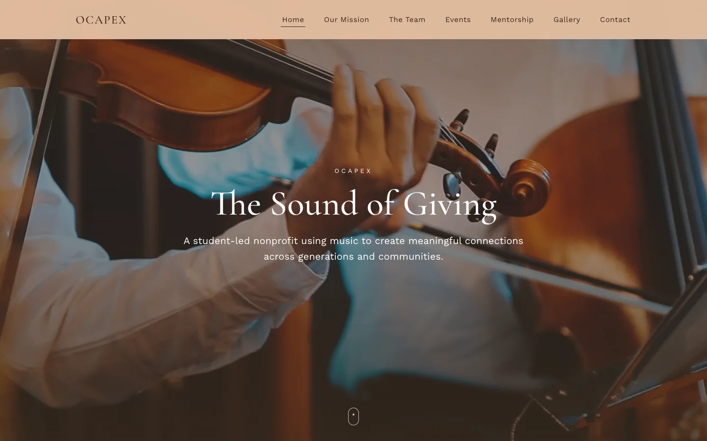
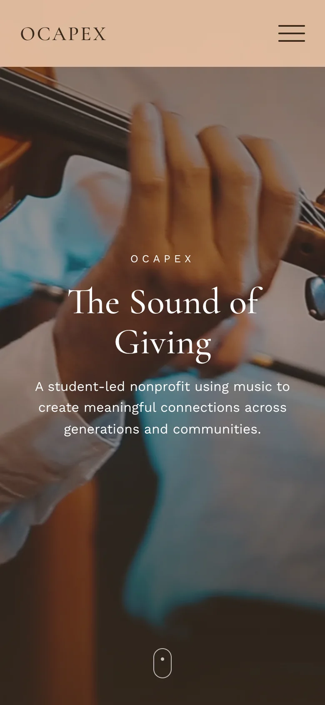

OCAPEX
A student-led music nonprofit that brings live performances to the people who cannot come to the concert hall.
- Type
- Community. Student-led music nonprofit
- Role
- Founder and president
- Founded
- 2022, South Florida
- Form
- Registered 501(c)(3), led and run by students
- Links
- ocapex.com. Performances on YouTube
About the numbers. Every total on this page is organization-wide, the work of more than seventy student musicians together, as of September 2026. Photographs of performances will be added when they are supplied.


What it is
OCAPEX is a registered 501(c)(3) led and run by students: more than seventy musicians aged 6 to 20 who bring live music to senior living communities, memory care, rehabilitation centers, hospitals and community festivals across South Florida. Every performance is planned, rehearsed and led by students.
The name is the values: Opportunity, Compassion, Action, Purpose, Empowerment, eXperience.
How it started
It began in 2022 with a visit to a senior living community that my viola teacher, Alberto Zilberstein, arranged. The residents got up out of their chairs. A few student musicians gathered after that, and the group became OCAPEX.
The calendar
The calendar runs all year. Sunscape Boca Raton, Aston Gardens at Parkland Commons, The Arbor at Delray, Covenant Village and Cleveland Clinic Weston Hospital are the communities we keep returning to. Two standing partners sit alongside them: the Ann Storck Center, which serves people with developmental disabilities of all ages, and the Imagina Children’s Foundation.
Benefit concerts, 2026
Two benefit concerts in 2026, Notes for Tomorrow at Lynn University on April 11 and The Sound of Giving on August 8, raised more than $13,500 for the Imagina Children’s Foundation. The Sound of Giving was live-streamed to the children in León, Mexico, whose programs it was raising money for.
My role
Running the organization means contacting the facilities and booking them, coordinating performers, making the concert programs and the promotional material, and working with the student team on outreach. OCAPEX has been featured twice by the Asiana Post.
In numbers
| Performances | 50+ |
|---|---|
| Community members reached | 3,000+ |
| Student musicians, ages 6 to 20 | 70+ |
| Service hours | 2,000+ |
| Pieces performed | 100+ |
| Raised for Imagina in 2026 | $13,500+ |
Next
Plans for a Groton chapter are underway. I am also a volunteer with the Imagina Children’s Foundation, where since 2025 I have helped manage an inventory of around 200 handmade items made by children in León for fundraising auctions, and a Junior Ambassador since August 2026.